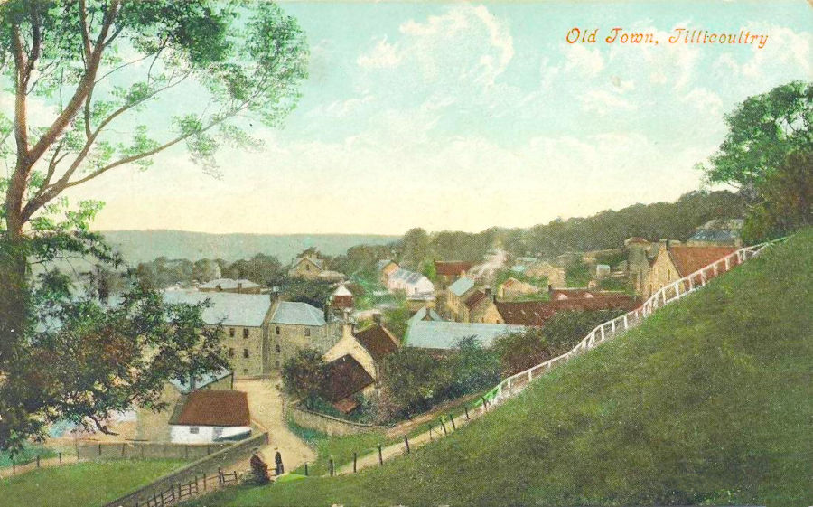
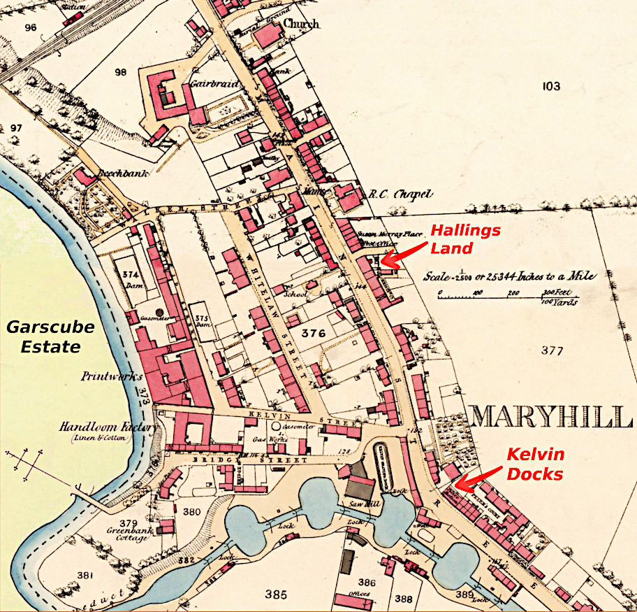
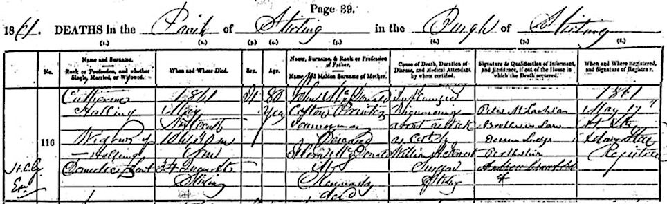

-

Halling
variously written as Haling, Hawling, Holling, Hallan etc.
This page is about Catherine Halling nee McDonald and her family. In particular, Catherine was the mother of Jessie Halling who married Archibald McIntyre in 1828.
Catherine's family were in a few different places but were mostly in Renton, Cardross, Selkirk, Stirling, Doune and Edinburgh. The father, John McDonald was working early on as a bleacher and later as a cotton printer. This is not too surprising since the textile industries were the main source of employment at the time.
Renton in 1790. On the left can be seen the river Leven and Dalquhurn House. The first bleach field in the Vale of Leven was located at Dalquhurn and the print field was further to the left.
The first child of John and Flora McDonald was Catherine, born in 1781, in Renton, which was given as her place of birth at the time of her passing. The next known child was Alexander whose birth was registered in 1787 in Cardross, only 2 miles from Renton. It is difficult to say where the McDonalds exact whereabouts were because at the time the Cardross Parish Register covered Renton as well.
A Bleachfield
» John McDonald (about 1750 – unknown)
married Flora Kennedy (about 1755 – unknown)
in Scotland
and they had the following children:
Catherine McDonald ??.??.1781 –
*Renton16.05.1861
†Stirlingm. William Halling, about 1808 Alexander McDonald 05.02.1787 –
*Cardross25.02.1798
†Selkirk(12 years old) Mary McDonald ??.??.1788 –
*Lochaber29.08.1854
†Dounem. Peter McLachlan in Tillicoultry, 05.11.1814 Margaret Kennedy McDonald ?.?.~1789 –
*Selkirk16.12.1890
†Edinburghm. Andrew Rutherford in Edinburgh, 30.11.1815 Agness McDonald 06.10.1795 –
*Selkirkunknown
†unknownstatus unknown 1787 February 5 - Birth of Alexander McDonald, in Cardross
to John McDonald, and his wife Florence or Florey Kennedy1795 October 6 - Birth of Agness McDonald, in Selkirk
to John McDonald, bleacher at Shawburn and his wife Flora Kennedy, in the presence of the congregation1789 February 23 - Death of Alexander McDonald, in Selkirk
Tillicoultry
1814 November 5 - banns for the marriage of Mary McDonald and Peter McLachlan in Tillicoultry
Mary McDonald
and Peter McLachlan
» Mary McDonald (??.??.1788 – 29.08.1854)
married Peter McLachlan (??.??.1780 – 27.11.1862)
in Tillicoultry,Clackmannan,Scotland, 05.11.1814
and they had the following children:
Peter McLachlan 25.11.1815 –
*Scotland14.04.1884
†Cheshire, Englandm. Sarah Forster John McLachlan 23.08.1817 –
*Tillicoultry??.??.1894
†unknownstatus unknown James McLachlan
(gardener)15.08.1819 –
*unknown30.03.1906
†Dounem. Margaret Whitehead in Kilmadock, 29.11.1854 Alexander McLachlan 23.05.1821 –
*unknownunknown
†unknownstatus unknown Catherine McLachlan 07.03.1823 –
*unknown03.05.1902
†Kilmadockstatus unknown Archibald McLachlan 06.10.1825 –
*Doune Lodge17.09.1912
†Stirlingm. Catherine Manticha in Gorbals, 10.01.1853
m. Isabella McCose in Huntly, 25.04.1865Mary McLachlan 15.11.1827 –
*Kilmadockunknown
†unknownstatus unknown William McLachlan 13.10.1830 –
*Kilmadock18.01.1886
†Glasgowm. Georgina Manticha in Glasgow, 08.11.1860 Andrew McLachlan 24.12.1832 –
*unknownunknown
†unknownstatus unknown 1825 October 6 - Birth of Archibald McLachlan

Doune Lodge, Perthshire
1841 Census for the McLachlan Family
1851 Census for the McLachlan Family, Kilmadock, Doune Lodge

Peter McLachlan, 70, Land Steward, b.Ardech
Mary McLachlan, 67, Wife, b.Lochaber
John McLachlan, 33, son, b.Tillicoulty
Mary McLachlan, 22, daughter, b.Kilmadock
1862 November 27
Death of Peter McLachlan,
Overseer to the Earl of Moray,
Widower of Mary McDonald,
Died at Doune Lodge, Parish of Kilmadock, Perthshire, Age 82,
Informant of death, James McLachlan, son, present
Archibald McLachlan
Margaret Kennedy McDonald
and Andrew Rutherford
» Margaret Kennedy McDonald (about 1789 – 16.12.1890)
married Andrew Rutherford (about 1788 – 12.07.1847)
in Edinburgh, 30.11.1815
and they had the following children:
Martha Rutherford about 1816 –
*Traquairunknown
†unknown(unmarried) Andrew Rutherford about 1817 –
*Edinburgh??.??.1846
†Jamaicastatus unknown Walter Rutherford 20.09.1819 –
*Edinburgh21.03.1882
†Brindle, Englandm. Marion Sandilands Smith in Edinburgh, 15.06.1841 John Rutherford ??.??.1821 –
*Edinburgh??.10.1863
†Ballarat VICstatus unknown Robert Rutherford
(shopkeeper)24.11.1823 –
*Edinburgh27.09.1861
†Edinburghstatus unknown Margaret Rutherford 14.10.1825 –
*Edinburghunknown
†unknownstatus unknown William Rutherford 05.07.1827 –
*Edinburgh??.11.1877
†Edinburghstatus unknown Maria Rutherford about 1830 –
*Edinburghunknown
†unknownstatus unknown Isabella Rutherford about 1835 –
*unknown??.??.1842
†Edinburgh(6 years old) 1890 December 16 - Death of Margaret Kennedy (McDonald) Rutherford in Edinburgh
1842 - Burial of 6 year old Isabella Rutherford in New Calton Burying Ground, Edinburgh
1890 December 19 - Burial of Margaret Kennedy Rutherford in Warriston
1890 December 16 - Death of Margaret Kennedy Rutherford in Edinburgh, Widow of Andrew Rutherford, Spirit Merchant, Lauriston Street, Edinburgh, Age 101 years, Parents John Maconald, Cotton Bleacher, deceased and Flora Macdonald, nee Kennedy, deceased, Informant Walter P. Connolly, Grandson
Catherine (McDonald) Halling
back of photo of Catherine
Hallings Land on the map of Maryhill
Hallings Land in Maryhill (rear view)
Hallings Land For Sale 1857 (Glasgow Herald)
Catherine McDonald
and William Halling
» Catherine McDonald (about 1781 – 16.05.1861)
married William Halling
somewhere in Scotland, about 1807
and they had the following children:
Jessie Dewar Halling ?.?.~1808 –
*Traquair, Peebles-shire26.05.1887
†Sconem. Archibald McIntyre in Kilmonivaig, 18.12.1828 William Charles Halling 20.11.1811 –
*Edinburgh?.?.~1830
†unknownstatus unknown Timeline for Catherine (McDonald) Halling
1781 (about) born in Renton, Dumbartonshire (1861 Census) to John McDonald (Cotton Printer Journeyman) and Flora Kennedy (1861 death cert)
1787 brother Alexander born in Cardross
1788 sister Mary born in Lochaber
1789 sister Margaret born in Selkirk
1795 sister Agness on October 6 in Selkirk, with father John working as a bleecher at Shawburn
1807 (about) married to William Halling
1808 (about) daughter Jessie Dewar Halling born in Traquair, Peeblesshire (1851 Census)
1811 son William Charles Halling born on November 20 in Edinburgh
1828 Dec 18 daughter Jessie marries Archibald in Kilmonivaig (Scotlands People BDM)
1837 built Hallings Land as 3 storey building, 2 flats and 1 shop (Will)
1841 living of Independent Means at Hallings Land, Garscube Road, in Barony, Lanarkshire (1841 Census)
1851 visiting Eglantine Katherine Balfour at Grosvenor Crescent, St Georges Hanover Square, Middlesex (London) with her grand-daughter Amelia aged 14 (Jessie's daughter) who was attending the Catholic School in Clarendon Square
1857 Feb 6 advertised Hallings Land for sale in Maryhill, Glasgow
1861 Apr 7 visiting 3 Hope Street Falkirk, 46yr old John McDonald (Head) of Mortlack Banffshire, Roman Catholic Priest and 30yr old Mary Smith (Servant) of Edinburgh
1861 May 16 died May 16 at 10:30 a.m. in Stirling at 34 Queen Street
William Charles Halling
1811 December 15 - Christening, born November 201861 May 16 - Death of Catherine Halling in Stirling